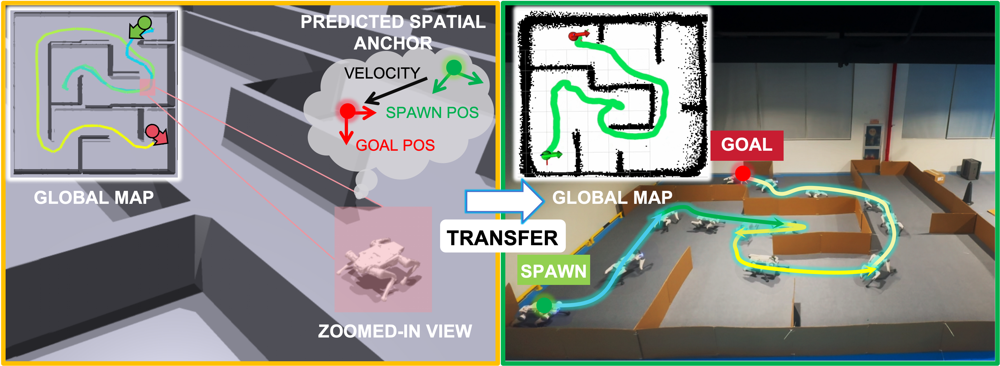
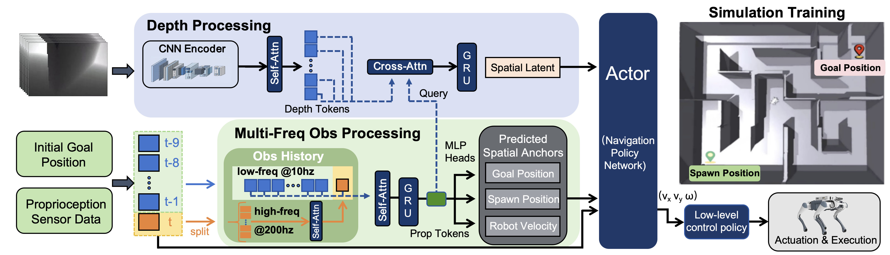

Goal
The robot receives target information only at initialization and receives no external goal refresh during rollout.

Learning-based visual navigation for legged robots typically relies on continuous goal updates from hierarchical state estimation to provide a persistent directional reference. This reliance incurs additional sensory and computational overhead and deviates from fully end-to-end mobile autonomy. Furthermore, under partial observability, policies are prone to learn myopic behaviors, easily becoming trapped in dead ends and complex structural layouts.
To address these limitations, we investigate a goal-initialized navigation setting, where the target is provided only once at the beginning of an episode, requiring the robot to operate based on intrinsic spatial memory without subsequent goal updates from external modules. In this work, we propose GUIDE, a fully end-to-end reinforcement learning framework designed to cultivate internal directional awareness.
Specifically, GUIDE incorporates a spatial anchor predictor that leverages multi-frequency proprioceptive history to extract egomotion representations, thereby maintaining a persistent long-horizon spatial context for navigation. Concurrently, it utilizes raw depth streams to perceive local environmental geometry. We evaluate the proposed framework across both simulation and real-world scenarios on a quadruped robot. Experiments show that GUIDE learns reliable egomotion and directional awareness, enabling a fully end-to-end deployed policy to safely navigate through dense clutter and structured mazes without subsequent goal guidance or prior maps.
Overview
GUIDE studies end-to-end visual navigation under a goal-initialized setting. The target is provided only once at the beginning of an episode, and the deployed policy must sustain directional awareness using onboard proprioception and depth perception without streaming relative-goal updates.
Goal
The robot receives target information only at initialization and receives no external goal refresh during rollout.
Memory
Multi-frequency proprioceptive history is used to learn egomotion representations and persistent spatial context.
Perception
Raw depth streams provide local geometric cues for obstacle avoidance and navigation through cluttered or maze-like scenes.
Pipeline

Real-world